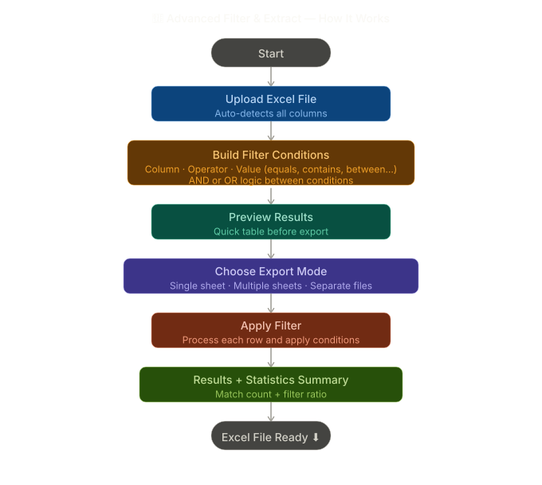

Visual workflow for Filter & Extract — choose conditions, process, and export.

INPUT
Excel / CSV Dataset
Upload your full dataset with all rows. The tool works on any structured Excel or CSV file.
PROCESS
Rule-Based Row Filtering
Define filter conditions per column. Datacorex evaluates every row against your rules and extracts matches.
OUTPUT
Organized Excel Output
Download the results as a clean Excel file containing only the matching rows, or split output into separate worksheets or separate files based on unique values in the selected column.
INPUT
Real example
Orders.xlsx filtered by Region = Riyadh and Status = Pending
OUTPUT
What you get
A clean filtered file with only matching rows ready for action.